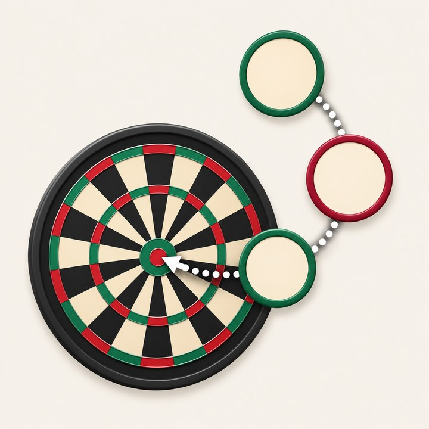

ハードダーツのスコア
投げた点を入れると、
上がりの道すじが出る。
家のダーツボードで投げた点を入れると、残りの点と、残りの本数で上がる道すじ（アレンジ）がすぐ出ます。01・クリケット・カウントアップ、ひとりなら COM と対戦も。成績は人ごとに残り続けます。
App Store・Google Play で配信予定買い切りで全部の機能が使え、アプリ内課金・サブスクリプション・広告はありません。通信しません。アカウントもありません。

こんな困りごとのために
上がり方がすぐ出てこない
残りが170以下で上がれるときは、残りの本数で上がる道すじを出します。170なら T20 T20 BULL、121なら T20 T15 D8。
入れ間違えた
01 は3投の合計か1投ずつを選べます。3投では出ない合計は入れられず、間違えたら［戻す］で1つずつ戻せます。
ひとりで練習したい
01 を COM と対戦できます。強さは1〜12。カウントアップで点を伸ばす練習も。
記録が消える・前の月が見られない
成績はこの端末に残り続けます。01 の平均を月ごとのグラフで。書き出して機種変更にも。
できること
| 01 | 301・501・701・1001・上がりはダブル（初めの設定）・マスター・何でも・バースト・アレンジ |
|---|---|
| クリケット | 15〜20とブル・マークと点を自動で数える・ラウンドの上限 なし・15・20 |
| カウントアップ | 8ラウンド・24投の合計 |
| COM | 01 で対戦・強さ1〜12（3投の平均がおよそ20〜108） |
| 成績 | 3投の平均・最高の上がり・501の最少本数・100以上／140以上／180・MPR・カウントアップの最高・月ごとのグラフ |
決まりは世界ダーツ連盟（WDF）の競技規則にそろえました。お店のダーツマシン（ソフトダーツ）の成績は読みません。